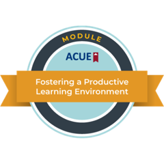

Ph.D. Candidate in Business and Economics · Lehigh University
ECO 301/403, Econometric Software
Adjunct Professor, Lehigh University — Spring 2027 (scheduled).
ECO 146, Intermediate Microeconomic Analysis
Adjunct Professor, Lehigh University — Summer 2026. A six-week online section, taught synchronously.
ECO 001, Principles of Economics — 2022–2024; Fall 2026
ECO 045, Statistical Methods — Winter 2026
FIN 125, Introduction to Finance — 2024–2025
HHUM 125, Introduction to Health Humanities — guest lecturer, Moravian University, February 2026
Teaching assistant evaluations: 4.7 / 5.0 (ECO 001, four-semester average); 4.8 / 5.0 (FIN 125, highest semester).
Scarcity is the first thing intermediate microeconomics teaches, and it is also what my research is about. Every paper I have written asks what happens when a constraint on access moves: how far someone has to drive to reach a dispensary, whether a household can still afford the car that gets them to work, whether dental coverage exists, whether a psychiatric bed exists. The answer is almost never that people simply do without. They substitute, they travel, they postpone — and the cost lands somewhere the policy did not intend. That is the question I find worth a career, and it is the same question I put in front of students in week one.
A classroom is a scarcity problem of the same kind. Students' time has an opportunity cost, their attention is uneven across the room, a six-week summer session has no room to recover a week that goes badly, and my own information is scarcest of all: I cannot see what is failing to land unless students show me. Four commitments follow.
Commit before you are shown. Listening is cheap; producing an answer is what costs something, so that is where class time goes. Every ECO 146 meeting closed with a five-item exercise answered before any solution appeared, and the same skill came back days later on the graded problem set — the CPI conversion students first met as a $12 sandwich returned as a $90 textbook rental.
Own the derivation. A fully worked example comes first; then the structure fades. Problem Set 2 broke the market-demand problem into six numbered steps; the midterm asked for the same object in four. Every calculation question asked students to show the condition, the substitution, and the intermediate steps.
Space it out. Every core skill returns at least three times, inside a different problem each time. Horizontal summation appeared five times in five weeks: a wheat market in class, a kinked two-group demand curve, a midterm question with an added elasticity, market supply with two types of firm, and the uniform price of a price-discriminating monopolist.
Test my own teaching. Most items are auto-graded and return a signal within a day, and each problem set is calibrated against what the previous one revealed. Students see things about my course that I cannot, which makes them the most reliable instrument I have.

Effective Teaching Practices, Association of College and University Educators (ACUE) — in progress, expected May 2027. Completed the module Fostering a Productive Learning Environment in September 2026.Strategic Methods for AI-Responsive Teaching (SMART), AI Innovator Track, Lehigh University — Fall 2026. Designing, implementing, and evaluating an AI-responsive resource for an economics course.
Bloomberg Market Concepts (BMC) Certificate, Bloomberg for Education — 2026.
Graduate Orientation Ambassador, College of Business, Lehigh University — 2025, 2026
President, Lehigh University Chinese Christian Fellowship — 2023–present; led the organization's recruitment at the university student organization expo, 2023–2025
Referee (with C. D. Meyerhoefer), Journal of Mental Health Policy and Economics — 2026
In a department, I want to take on the service that shapes what students leave with: keeping the curriculum current, advising students on course sequences and careers, and helping them find a first research or internship experience.
Principles of Microeconomics and Macroeconomics; Intermediate Microeconomics; Statistics and Applied Econometrics; Econometric Software; Health Economics; Introduction to Finance; data analysis with Stata, R, and Python.